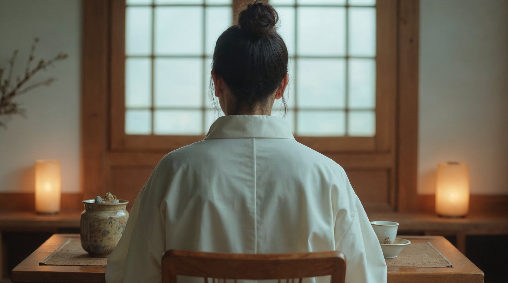
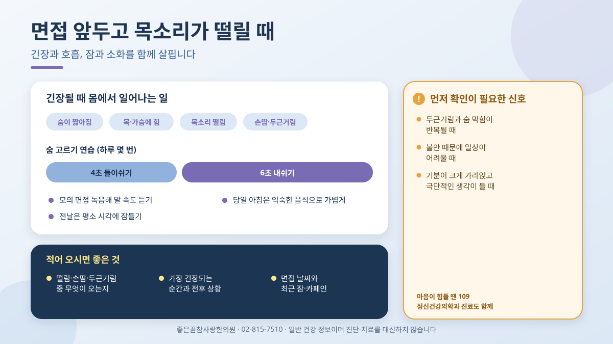

이종호 한의사 감수좋은꿈참사랑한의원 대표원장 (한의사 면허번호 19769)발행 2026-11-24 · 수정 2026-11-27
이 글의 차례
- 왜 이런 불편이 생길 수 있나요
- 왜 목소리가 유독 떨릴까요?
- 긴장은 어떤 모습으로 나타나나요?
- 일상의 긴장과 도움이 필요한 불안은 어떻게 다른가요?
- 상황별 예시
- 스스로 점검해 보세요
- 먼저 이렇게 여쭙니다
- 일상에서 먼저 해 볼 수 있는 것
- 호흡 연습은 이렇게 해 보세요
- 목소리 떨림을 줄이는 말하기 연습
- 면접 전 잠이 얕아질 때는 어떻게 하나요?
- 몸의 긴장을 푸는 짧은 동작
- 면접까지 남은 기간은 이렇게 써 보세요
- 면접 당일 아침과 대기 시간
- 긴장하면 왜 잠과 소화도 흔들릴까요?
- 모의 면접은 어떻게 활용하면 좋을까요?
- 한의원에서 함께 살필 수 있는 경우
- 첫 진료는 이렇게 진행됩니다
- 이렇게 기록해 오시면 상담이 쉬워집니다
- 마치며
- 이런 증상은 먼저 확인이 필요합니다
- 함께 읽으면 좋은 글
긴장을 없애기보다 천천히 내쉬는 호흡과 반복 연습으로 다루는 방법을 익히는 것이 면접 준비에서 현실적인 목표입니다. 필기시험을 통과하면 면접이 남는데, 스터디에서 모의 면접만 해도 목소리가 떨리고 머릿속이 하얘진다며 걱정하는 분이 많습니다.
필기를 붙기까지 얼마나 오래 버텨 왔을지 생각하면, 마지막 관문 앞에서 떨리는 마음이 얼마나 클지 저도 짐작이 됩니다. 제가 먼저 드리고 싶은 말씀은 목소리가 떨린다고 준비가 부족한 것은 아니라는 점입니다. 몸이 이 자리를 중요하게 여긴다는 신호이고, 그 신호를 다루는 방법은 연습으로 익힐 수 있습니다.
왜 이런 불편이 생길 수 있나요
- 긴장하면 몸이 위급한 상황처럼 반응해 숨이 짧아지고 목과 가슴 근육에 힘이 들어가 목소리가 떨릴 수 있습니다.
- 잘해야 한다는 부담이 클수록 몸의 변화를 더 크게 느끼고, 그것이 다시 긴장을 키우기도 합니다.
- 잠이 부족하거나 카페인을 많이 마신 날에는 두근거림과 떨림이 더 심하다는 분이 있습니다.
- 한의학에서는 긴장과 함께 잠, 소화, 몸의 열감 같은 변화도 함께 살핍니다.
- 필기 준비 기간 동안 혼자 공부하며 말할 기회가 적었다면, 사람 앞에서 소리 내어 말하는 것 자체가 낯설게 느껴질 수 있습니다.
왜 목소리가 유독 떨릴까요?
목소리는 숨이 성대를 지나며 만들어집니다. 긴장하면 숨이 가슴 위쪽에서 짧게 끊기고, 목 주변 근육이 굳어 성대가 고르게 떨리지 못하니 목소리가 흔들리고 갈라지기 쉽습니다.
여기에 "떨리면 어떡하지" 하는 걱정이 더해지면 내 목소리에 온 신경이 쏠립니다. 듣는 사람은 잘 알아채지 못할 정도의 떨림도 나에게는 크게 들려, 더 긴장하고 숨이 더 짧아지는 고리가 생깁니다. 그래서 목소리 자체보다 숨과 주의를 다루는 연습이 도움이 됩니다.
긴장은 어떤 모습으로 나타나나요?
같은 면접 긴장이라도 몸에 먼저 나타나는 모습은 사람마다 다릅니다. 목소리 끝이 갈라지거나 작아지는 분, 가슴이 두근거리고 숨이 가빠지는 분, 손에 땀이 나고 손끝이 떨리는 분, 얼굴이 화끈 달아오르는 분이 있습니다. 머릿속이 하얘져 준비한 말이 떠오르지 않는다는 분도 많습니다.
면접장 밖에서 먼저 신호가 오기도 합니다. 며칠 전부터 속이 더부룩하거나 설사를 하고, 잠들기 어렵거나 새벽에 자주 깨는 식입니다. 나에게 어떤 모습이 먼저 오는지 알면 그 부분부터 대비할 수 있습니다.
일상의 긴장과 도움이 필요한 불안은 어떻게 다른가요?
면접 앞에서 떨리는 것은 대부분 자연스러운 긴장입니다. 다만 면접과 상관없는 날에도 불안이 하루 종일 이어지거나, 몇 주째 잠과 식사가 제대로 되지 않거나, 기분이 가라앉아 아무것도 하기 싫은 날이 이어진다면 긴장이 일상 전체로 번진 것일 수 있습니다.
이럴 때는 혼자 견디기보다 상담 기관의 도움을 함께 받으시길 권합니다. 도움을 받는 것은 약해서가 아니라, 남은 준비를 끝까지 해내기 위한 선택입니다.
상황별 예시
- 예를 들어 스터디 모의 면접에서 첫 질문에 답하다 목소리가 떨리기 시작하면 그 뒤 답변까지 흔들리는 경우, 첫마디를 미리 정해 두고 그 문장만 수십 번 소리 내어 연습해 보세요. 시작이 안정되면 뒤따르는 말도 차분해지기 쉽습니다.
- 예를 들어 집에서 혼자 연습할 때는 괜찮은데 사람 앞에만 서면 떨리는 경우, 가족이나 친구 한 명 앞에서 연습하는 것부터 시작해 사람 수를 조금씩 늘려 보세요.
- 예를 들어 면접 일주일 전부터 잠이 얕아지고 아침마다 속이 불편한 경우, 연습량을 늘리기보다 잠드는 시각과 아침 식사를 먼저 챙기는 편이 당일 컨디션에 더 도움이 될 수 있습니다.
스스로 점검해 보세요
- 모의 면접에서 목소리가 떨리거나 작아진다
- 긴장하면 말이 빨라진다
- 면접 생각만 해도 가슴이 두근거린다
- 최근 잠들기까지 30분 넘게 걸린다
- 긴장하면 속이 더부룩하거나 화장실에 자주 간다
- 커피를 하루 세 잔 넘게 마신다
해당되는 항목이 많더라도 걱정하실 필요는 없습니다. 어디에서 긴장이 드러나는지 알게 된 것이니, 그 부분부터 하나씩 연습해 보세요. 잠과 소화까지 흔들린다면 진료 때 이 목록을 함께 보며 이야기를 나누면 좋습니다.
먼저 이렇게 여쭙니다
- 면접 연습 때 어떤 몸의 변화가 느껴지나요?
- 긴장이 가장 심한 순간은 언제인가요?
- 요즘 잠은 잘 주무시나요?
- 긴장하면 속이 불편해지나요?
- 커피나 에너지 음료는 하루에 얼마나 드시나요?
- 면접 날짜와 남은 준비 기간은 어떻게 되나요?
몸의 변화를 자세히 여쭙는 것은 긴장이 어디로 먼저 드러나는지에 따라 살필 곳이 달라지기 때문입니다. 목소리, 가슴, 속, 잠 가운데 어디가 가장 힘든지 편하게 말씀해 주세요.
일상에서 먼저 해 볼 수 있는 것
- 4초 들이쉬고 6초 내쉬는 호흡을 하루 몇 번 연습하기
- 모의 면접을 녹음해 말하는 속도 확인하기
- 면접 전날은 평소 시각에 잠들기
- 면접 당일 아침은 익숙한 음식으로 가볍게 먹기
- 하루 20~30분은 걷거나 가볍게 몸을 움직여 긴장 풀기
- 면접 복장을 미리 입고 연습해 당일의 낯섦 줄이기
- 면접장까지 가는 길을 미리 확인해 두기
호흡 연습은 이렇게 해 보세요
긴장을 다루는 가장 손쉬운 도구는 숨입니다. 내쉬는 숨을 들이쉬는 숨보다 길게 하면 몸이 조금씩 차분해지는 쪽으로 돌아온다고 알려져 있습니다.
- 의자에 편히 앉아 어깨 힘을 빼고 한 손을 배 위에 올리기
- 코로 4초 동안 천천히 들이쉬며 배가 부풀어 오르는 것 느끼기
- 입을 살짝 오므리고 6초 동안 천천히 내쉬기
- 이렇게 다섯 번에서 열 번 반복하기
평소에 하루 몇 번씩 연습해 두어야 실제 면접장에서도 자연스럽게 나옵니다. 처음에는 4초, 6초를 세는 것이 어색해도 며칠 지나면 몸이 기억합니다. 숨을 억지로 참지 말고, 어지러우면 바로 멈추세요.
목소리 떨림을 줄이는 말하기 연습
목소리가 떨릴 때 억지로 크게 말하려 하면 목에 힘이 더 들어갑니다. 대신 숨과 속도를 바꿔 보세요.
- 말하기 직전에 숨을 한 번 내쉬고, 다시 들이쉬며 첫마디 시작하기
- 한 문장을 짧게 끊고, 문장 사이에 한 박자 쉬기
- 평소보다 조금 낮은 음으로 시작하기
- 문장 끝을 흐리지 말고 또렷하게 마무리하기
- 면접관의 눈만 보기 어렵다면 미간이나 코 쪽을 번갈아 보기
녹음한 답변을 들어 보면 생각보다 떨림이 크지 않다는 것을 알게 되는 분이 많습니다. 떨림을 없애려 애쓰기보다 속도와 숨을 고르는 데 마음을 두세요.
면접 전 잠이 얕아질 때는 어떻게 하나요?
면접 며칠 전부터 잠들기 어렵거나 새벽에 깨서 답변을 되뇌게 된다는 분이 많습니다. 잠이 부족하면 다음 날 떨림과 두근거림이 더 커지기 쉬워, 이 시기에는 연습만큼 잠을 챙기는 것이 중요합니다.
- 잠들기 한 시간 전에는 예상 질문과 답변을 내려놓기
- 떠오르는 걱정은 머리맡 메모지에 적어 두고 "내일 다시 보자"고 넘기기
- 저녁 이후 커피, 에너지 음료, 술 피하기
- 누워서 20분 넘게 잠이 오지 않으면 잠깐 일어나 조용히 앉아 있다 다시 눕기
- 잠이 오지 않아도 같은 시각에 일어나기
저는 잠이 흔들리는 분께 약을 생각하기 전에 생활 리듬부터 권합니다. 끼니를 날마다 비슷한 시간에 드시고, 저녁에는 가볍게 걷고, 잠들기 1~2시간 전에는 따뜻한 물에 몸을 담가 보시라는 것입니다. 몸이 하루의 흐름을 기억하게 하려는 방법입니다.
욕조가 없다면 따뜻한 물로 샤워를 충분히 하거나 발만 10~15분 담가도 괜찮습니다.
하룻밤 잠을 설쳤다고 면접을 망치는 것은 아닙니다. "조금 못 자도 괜찮다"고 생각하면 오히려 잠이 쉽게 오는 경우가 많습니다.
몸의 긴장을 푸는 짧은 동작
긴장은 마음에서 시작되지만 몸에 쌓입니다. 생각으로 풀려고 하면 잘 안 풀릴 때가 많아서, 일부러 힘을 한 번 주었다가 빼는 방법을 권합니다.
주먹을 5초 동안 꽉 쥐었다가 천천히 펴 보세요. 어깨를 귀 쪽으로 올려 5초 버틴 뒤 툭 떨어뜨리고, 턱에 힘이 들어가 있다면 입을 살짝 벌려 혀를 아랫니 뒤에 편히 둡니다. 힘을 준 느낌과 뺀 느낌의 차이를 몸이 알게 되는 것이 이 연습의 요점입니다.
면접까지 남은 기간은 이렇게 써 보세요
면접까지의 시간을 몇 단계로 나누면 막연한 불안이 할 일로 바뀝니다.
- 3~4주 전: 예상 질문 정리와 답변 뼈대 쓰기, 호흡 연습을 하루 습관으로 만들기
- 2주 전: 스터디나 가족 앞에서 모의 면접, 녹음해 속도와 떨림 확인하기
- 1주 전: 새로운 내용보다 첫인사와 자기소개를 다듬고, 일어나는 시각을 면접 당일과 같게 맞추기
- 전날: 연습은 가볍게 한두 번만, 옷과 준비물 챙기고 평소 시각에 잠들기
면접이 이른 아침이라면 일주일 전부터 그 시각에 일어나 소리 내어 말해 보세요. 아침에는 목소리가 잘 안 풀린다는 분이 많아, 미리 몸을 맞춰 두면 당일이 한결 편할 수 있습니다.
면접 당일 아침과 대기 시간
당일에는 새로운 것을 시도하기보다 연습해 온 순서를 그대로 따르는 것이 마음을 안정시킵니다. 집을 나서기 전 따뜻한 물 한 잔으로 목을 적시고, 이동하는 동안 낮은 소리로 허밍하며 목을 풀어 보세요.
대기실에서는 휴대폰으로 답변을 계속 외우기보다 천천히 내쉬는 호흡을 다섯 번 해 보세요. 대기 시간이 길수록 긴장이 커지기 쉬운데, 이때는 "떨려도 괜찮다, 준비한 만큼 말하면 된다"고 스스로에게 짧게 말해 주는 것도 도움이 됩니다.
긴장하면 왜 잠과 소화도 흔들릴까요?
면접이 다가오면 잠들기 어렵고, 아침에 입맛이 없고, 화장실에 자주 간다는 분이 많습니다. 긴장하면 몸은 쉬고 소화하는 일보다 버티는 일에 힘을 쓰게 되어, 잠과 소화가 함께 흔들리기 쉽습니다.
한의학에서는 걱정과 긴장이 오래가면 기운이 가슴에 뭉쳐 두근거림과 답답함이 생기고, 그 영향이 비위로 가서 입맛과 소화가 떨어진다고 봅니다. 그래서 면접 긴장으로 오신 분께도 잠, 꿈, 소화, 손발이 찬지, 얼굴로 열이 오르는지를 함께 여쭙습니다.
저는 잘 먹고, 잘 싸고, 잘 자고, 마음 편하고, 몸 따뜻하게, 이 다섯 가지를 몸이 회복하는 바탕으로 봅니다. 면접 준비 기간에는 이 다섯 가지가 한꺼번에 흔들리기 쉬워서, 목소리만 보지 않고 하루 전체를 함께 들여다봅니다.
모의 면접은 어떻게 활용하면 좋을까요?
모의 면접은 답변을 다듬는 자리이기도 하지만, 떨리는 상황에 몸을 조금씩 익숙하게 만드는 연습이기도 합니다. 처음부터 완벽하게 하려 하기보다 떨려도 끝까지 말해 보는 경험을 쌓는 쪽에 무게를 두세요.
- 스터디원에게 내용 피드백뿐 아니라 목소리 크기와 속도도 함께 들어 보기
- 일부러 예상하지 못한 질문을 받아 머릿속이 하얘질 때 대처하는 연습하기
- 녹화한 영상을 보며 어깨, 손, 시선 같은 몸짓 확인하기
- 잘한 점 한 가지를 꼭 적어 두기
고칠 점만 쌓이면 자신감이 줄어듭니다. 사람은 생각보다 쉽게 낙담하니까요. 지난번보다 나아진 점을 하나씩 적어 두면 면접 당일 "이만큼 해 왔다"는 마음의 근거가 되어 줍니다. 연습을 못 한 날이 생겨도 스스로를 탓하지 말고 다음 날 다시 하면 됩니다.

한의원에서 함께 살필 수 있는 경우
- 긴장으로 목소리가 떨리고 숨이 짧아지는 경우 긴장과 호흡, 잠을 함께 살핍니다.
- 시험이 다가올수록 잠이 얕아지는 경우 잠의 리듬을 함께 살핍니다.
- 긴장하면 속이 불편해지는 경우 소화를 함께 살핍니다.
좋은꿈참사랑한의원에서는 모든 분께 맥을 짚으며 긴장과 잠, 식사처럼 몸으로 느끼는 변화를 여쭙고, 필요하다고 판단될 때 설진을 더해 몸 상태를 살핍니다. 침이나 한약 상담 등 상태에 맞는 방법을 정합니다.
한약을 상담할 때는 지금 드시는 약을 먼저 확인합니다. 처방받아 드시는 약이 있다면 그대로 이어 가시고, 조절이 필요하면 처방한 의사와 상의해 주세요. 이야기하신 내용은 본인 동의 없이 다른 사람에게 알리지 않습니다.
첫 진료는 이렇게 진행됩니다
처음 오시면 접수 뒤 다른 모든 분과 마찬가지로 맥부터 짚습니다. 서둘러 들어오셨다면 잠시 앉아 숨을 고르신 뒤에 짚는데, 걸어오신 직후에는 맥이 달라지기 때문입니다.
손목을 짚는 동안 긴장할 때 나타나는 몸의 변화, 잠과 식사, 면접 일정을 천천히 여쭙고, 필요하다고 판단되면 혀도 보여 달라고 말씀드립니다. 맥을 짚으면서 들으면 "떨린다"는 한마디 안에 숨이 짧아지는 건지, 속이 먼저 불편해지는 건지가 조금 더 또렷해집니다.
이야기 나누기가 어렵다면 말씀하실 수 있는 만큼만 하셔도 괜찮습니다. 들은 이야기를 바탕으로 침이나 한약 상담 가운데 지금 필요한 방법과 면접까지의 생활 계획을 함께 정하고, 다시 오시면 그사이 모의 면접과 잠이 어땠는지부터 이어서 여쭙습니다.

이렇게 기록해 오시면 상담이 쉬워집니다
- 긴장할 때 나타나는 몸의 변화(목소리 떨림, 손땀, 두근거림, 속 불편)
- 긴장이 가장 심한 순간과 그 전후 상황
- 최근 잠과 식사, 카페인 섭취
- 면접 날짜와 남은 준비 기간
모의 면접을 한 날마다 "스터디 3명 앞, 첫 질문에서 떨림, 두 번째부터 괜찮음, 전날 잠 5시간"처럼 짧게 적어 두면, 어떤 조건에서 덜 떨리는지가 보입니다. 그 조건을 면접 당일에 가깝게 맞춰 가 보세요.
마치며
필기를 붙기까지 버텨 온 시간을 생각하면, 마지막 관문 앞의 떨림은 그만큼 이 자리를 아껴 왔다는 뜻이기도 합니다. 떨리는 목소리로도 준비한 이야기는 전해질 수 있습니다. 오늘은 숨 한 번 길게 내쉬는 것부터 해 보세요.
다음에 오시면 모의 면접에서 어느 순간 가장 떨렸는지, 그 전날 잠은 어땠는지부터 여쭙겠습니다.
이런 증상은 먼저 확인이 필요합니다
- 심한 두근거림이나 숨 막힘이 반복되거나 불안으로 일상생활이 어려운 경우
- 스스로를 해칠 생각이 들면 ☎ 109로 바로 연락하세요.
이런 신호가 있으면 한의원보다 가까운 병원이나 응급실을 먼저 찾으세요.
함께 읽으면 좋은 글
- 시험이나 발표만 앞두면 손이 떨리고 머리가 하얘지는 수행 불안은 어떻게 살피나요?
- 시험을 앞두고 미리 불안해질 때는 어떤 루틴이 도움이 되나요?
- 사람들 앞에 서거나 낯선 사람과 마주하면 얼굴이 달아오르고 몸이 굳는 사회불안(대인 긴장)은 어떻게 살피나요?

여쭙는 것
- 면접 연습 때 어떤 몸의 변화가 느껴지나요?
- 긴장이 가장 심한 순간은 언제인가요?
- 요즘 잠은 잘 주무시나요?
생활에서 해 볼 것
- 4초 들이쉬고 6초 내쉬는 호흡을 하루 몇 번 연습하기
- 모의 면접을 녹음해 말하는 속도 확인하기
- 면접 전날은 평소 시각에 잠들기
한의원에서 함께 살필 것
- 긴장으로 목소리가 떨리고 숨이 짧아지는 경우 긴장과 호흡, 잠을 함께 살핍니다.
- 시험이 다가올수록 잠이 얕아지는 경우 잠의 리듬을 함께 살핍니다.
- 긴장하면 속이 불편해지는 경우 소화를 함께 살핍니다.
먼저 확인이 필요한 신호
- 심한 두근거림이나 숨 막힘이 반복되거나 불안으로 일상생활이 어려운 경우
- 스스로를 해칠 생각이 들면 109로 바로 연락하세요.
한눈에 보는 표
| 구분 | 핵심 |
|---|---|
| 여쭙는 것 | 면접 연습 때 어떤 몸의 변화가 느껴지나요? 긴장이 가장 심한 순간은 언제인가요? |
| 생활에서 해 볼 것 | 4초 들이쉬고 6초 내쉬는 호흡을 하루 몇 번 연습하기 모의 면접을 녹음해 말하는 속도 확인하기 |
| 한의원에서 함께 살필 것 | 긴장으로 목소리가 떨리고 숨이 짧아지는 경우 긴장과 호흡, 잠을 함께 살핍니다. 시험이 다가올수록 잠이 얕아지는 경우 잠의 리듬을 함께 살핍니다. |
| 먼저 확인이 필요한 신호 | 심한 두근거림이나 숨 막힘이 반복되거나 불안으로 일상생활이 어려운 경우 스스로를 해칠 생각이 들면 109로 바로 연락하세요. |
자주 묻는 질문
긴장을 아예 없앨 수 있나요?
긴장은 자연스러운 반응이라 없애기보다 다루는 방법을 익히는 것을 목표로 합니다.
면접 당일 카페인 음료를 마셔도 될까요?
카페인은 두근거림과 손 떨림을 키울 수 있어 평소 마시지 않던 양은 피하시기를 권합니다. 평소 마시는 분이라면 그날은 양을 줄여 보세요.
면접 중에 머릿속이 하얘지면 어떻게 하나요?
"잠시 생각을 정리해도 되겠습니까"라고 말하고 숨을 한 번 내쉬어도 괜찮습니다. 짧은 침묵은 듣는 사람에게 생각만큼 길게 느껴지지 않습니다.
진료 시간은 어떻게 되나요?
좋은꿈참사랑한의원은 평일 09:30~20:00(점심 13:00~14:00), 토·일·공휴일 09:30~15:00에 진료합니다.
좋은꿈참사랑한의원은 재진 때 지난번 이야기부터 이어서 여쭙니다. 진료시간과 예약은 오시는 길에서 확인하세요.
어디서 상담받을 수 있나요?
좋은꿈참사랑한의원은 서울 동작구 만양로2길 2 신성빌딩 3층·5층(서울 동작구 상도동, 7호선 상도역 3번 출구 근처)에 있습니다. 한의사 3명(이종호 대표원장, 조영기 수석진료원장, 정원영 진료원장)이 진료합니다. 진료시간은 평일 09:30~20:00(점심 13:00~14:00), 토·일·공휴일 09:30~15:00이며, 방문 전 전화로 확인을 권합니다. 예약은 네이버 예약, 카카오톡 상담, 전화 02-815-7510로 받습니다.
이 글은 일반적인 건강 정보이며 개인의 진단이나 치료를 대신하지 않습니다. 증상이 있거나 복용 중인 약이 있다면 진료를 통해 확인하세요. 치료 효과는 개인마다 다를 수 있습니다.
작성 기준: 일반적으로 알려져 있는 건강 정보를 참고해 정리했습니다(대표원장 감수). 증상 기록은 1~2주 동안 하루 1회, 비슷한 시간에 적어 오시면 지난 상태와 비교하기 쉽습니다.